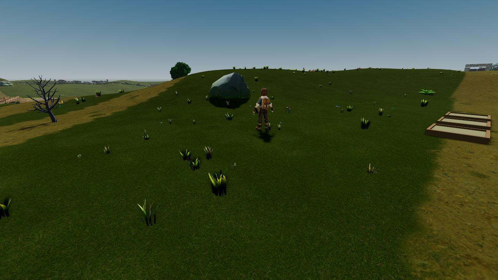
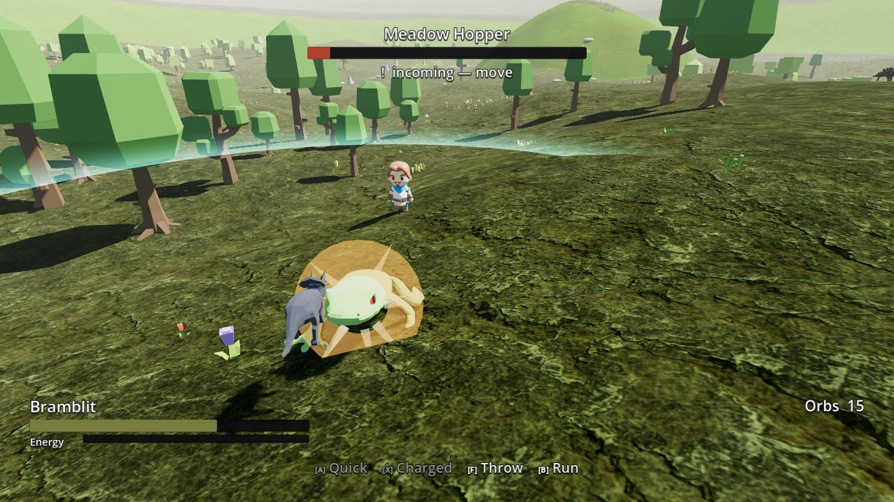
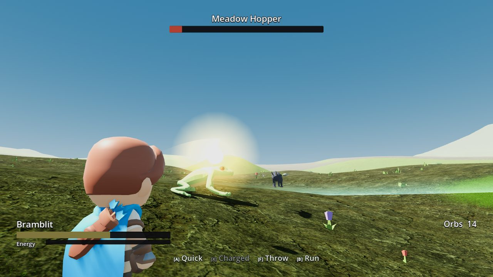
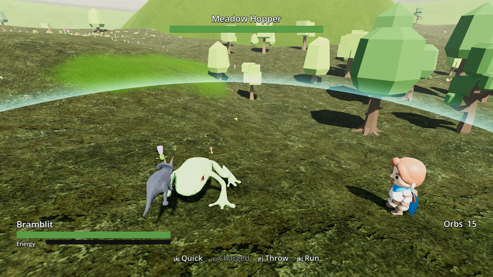
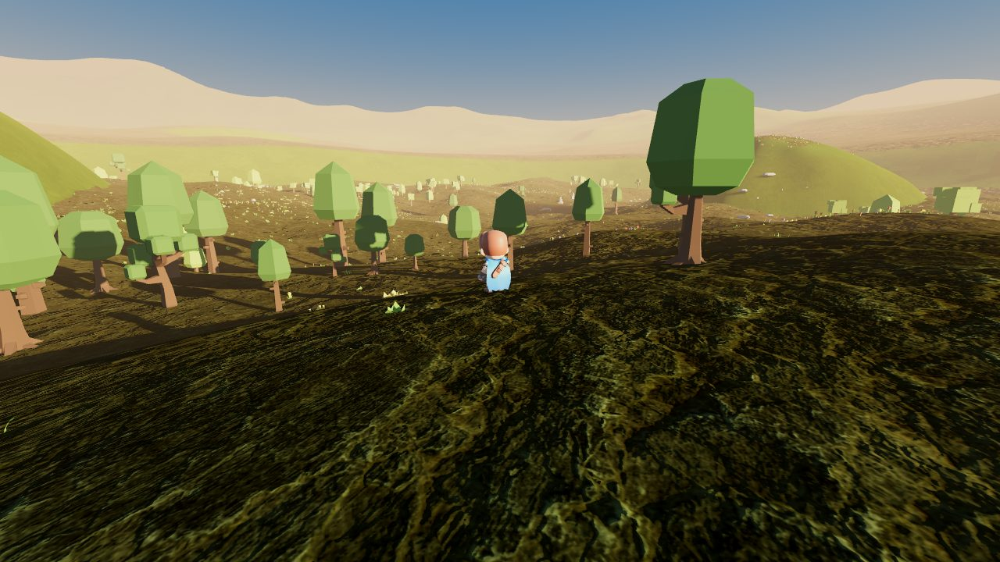

What it is
A third-person survival, crafting and creature-training game built in Godot, aimed at a handheld first. This build is the Meadows vertical slice: walk the biome, find a wild pal, and fight it yourself.
- Five, and only fiveYour whole roster is five pals. There is no storage box to park the rest in, so every catch is a decision about what you give up.
- You pilot the fightCombat hands you the controls of your pal inside a bounded arena. There is no dodge button — moving is the dodge, and attacks are aimed and can miss.
- Catching costs youTo throw, you take the camera back to your trainer and aim. Your pal is left undefended while you do it, and the opponent does not stop.
- The human cannot fightYou have no weapon. What you have is a pal, a throw, and where you chose to stand.
The Meadows
Every image on this page is a real in-game frame, captured by the project's own survey tool. No concept art, no touch-ups.





Honest state of it
This is a prototype, and the parts that are not finished are worth naming rather than cropping out of the screenshots. The creature and character models are sourced stand-ins, kept because they prove the rigging, animation and scaling systems around them — not because they are the art. A blind reviewer looks at every build and says so; those reviews are in the repository alongside the code.